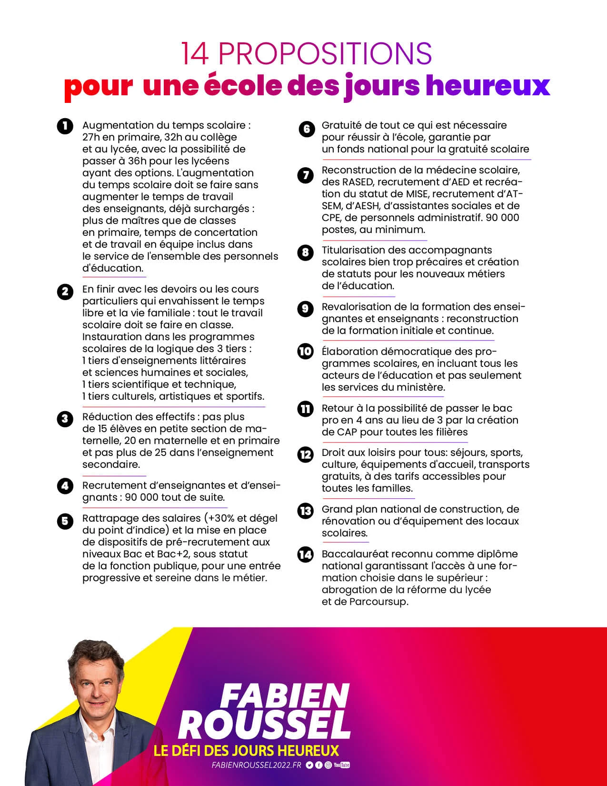

Appel archivé
Grève du 13 janvier. Pour une autre politique éducative
Date indiquée par Facebook · 12 janvier 2022
Repères éditoriaux
Nous avons relayé la grève unitaire du 13 janvier 2022 et les revendications des personnels de l’Éducation. Le compte rendu de Niort permet de retrouver la suite de l’appel.
Texte conservé avec la publication
POUR UNE AUTRE POLITIQUE ÉDUCATIVE
Ce jeudi 13 janvier, l’ensemble des syndicats de l’Éducation appelle à la grève et à la mobilisation. Le ministre Blanquer fait l’unanimité contre lui : sa gestion de la crise sanitaire est irresponsable. Elle met en danger les enseignant·e·s, les personnels, les élèves et leurs familles. Elle met l’école publique à genou.
Depuis bientôt deux ans que le virus circule, rien n’a été fait pour garantir de bonnes conditions d’apprentissage. Il n’y a personne pour remplacer les personnels malades : les classes ferment les unes après les autres, la restauration scolaire est désorganisée. Les va-et-vient des élèves, absents pour se faire tester ou pour s’isoler, rendent la progression des apprentissages difficile. Personne ne sait de quoi sera fait demain. Ce chaos, le ministre en est directement responsable : son protocole sanitaire, élaboré sans consulter les premiers concernés, annoncé par voie de presse à la veille de la rentrée, modifié sans cesse depuis, ne protège personne. Pire, il désorganise encore un peu plus l’Éducation !
C’est pourquoi les communistes seront aux côtés des personnels d’éducation en grève ce jeudi 13 janvier. Avec elles et eux, nous exigeons que le gouvernement prennent ses responsabilités, garantisse la sécurité de tous les personnels de l’Éducation, des élèves et de leurs familles, et restaure des conditions d’apprentissage sereine.
Nous exigeons que les élèves puissent être testés régulièrement, une fois par semaine ; que l’État fournisse des masques FFP2 à l’ensemble des personnels et équipe toutes les salles de capteurs de CO2 : cet effort ne peut pas être assumé entièrement par les collectivités locales. L’éducation est nationale, l’État doit prendre ses responsabilités.
Si notre système éducatif craque aujourd’hui, c’est parce qu’il a été fragilisé par des années de politiques libérales : nous manquons d’enseignant·e·s et de personnels, il n’y a personne pour remplacer les absents, personne pour réduire les effectifs. Mais comment recruter en urgence dans un métier qui nécessite un haut niveau de formation, et qui a été dévalorisé par des années de gel des salaires et de perte de sens ? Nous faisons plusieurs propositions : recruter l’ensemble des admis sur listes complémentaires et des admissibles aux concours de l’année dernière ; ouvrir des concours exceptionnels ; titulariser les contractuels en leur permettant de faire un service complet d’enseignement ; pré-recruter dès aujourd’hui 10 000 jeunes au niveau bac+3 sous statut de la fonction publique, en leur proposant une formation en alternance jusqu’à bac+5 et la perspective d’être titularisés. Ces jeunes pourraient être affectés à un établissement, y assurer des remplacements ponctuels ou y permettre des dédoublements, tout en poursuivant leur formation. Ces recrutements en urgence doivent aller de pair avec la reconstruction de la formation initiale et continue, pour donner aux nouveaux enseignants les moyens de maîtriser leur métier et de faire réussir tous les élèves.
Il ne s’agit pas seulement de répondre à la crise, mais bien de rompre avec des années de politiques éducatives qui ont réduit le service public au minimum. Nous ne voulons pas que l’Éducation nationale devienne l’école de celles et ceux qui n’ont pas d’autre choix ! Nous défendons au contraire une éducation ambitieuse, capable de donner un haut niveau de connaissances et de qualification à toutes et tous. C’est le sens de notre proposition d’allongement du temps scolaire : plus de temps en classe, pour lutter contre les inégalités sociales de réussite scolaire, transmettre des savoirs complexes à tous les jeunes et leur permettre de maîtriser leur avenir.
Jeudi, dans les cortèges, les communistes seront aux côtés des enseigant·e·s et des personnels de l’Éducation pour réclamer des solutions immédiates à la désorganisation de l’école. Ils seront aussi là pour mettre en débat une autre politique éducative, à partir de leurs 14 propositions pour l’école des jours heureux.
Marine Roussillon (Dirigeante nationale PCF , Maître de Conférence Université d'Artois)

Sources
Archive rouge · export Facebook · AR-0002-FB-01987
À lire aussi · Le 13 janvier à Niort, le personnel de l’Éducation nationale en grève